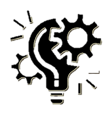

Oficina Asesora de Planeación
Temas
Organigrama
Temas de la Oficina Asesora de Planeación
Responsabilidades de la Oficina

Gestión por procesos
Gerencia del proyecto de inversión 8225
Articulación interinstitucional
 Responsabilidades de la Oficina
Responsabilidades de la Oficina
Responsabilidades de la Oficina
Responsabilidades de la Oficina
Responsabilidades de la Oficina
Responsabilidades de la Oficina